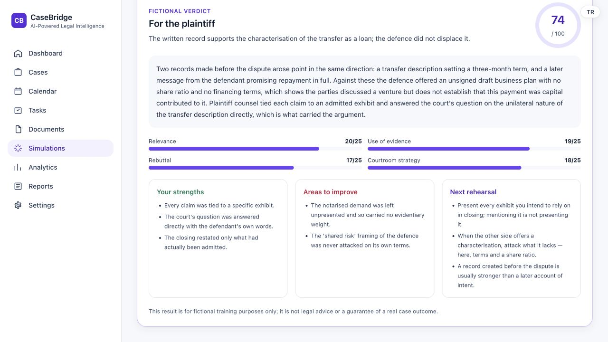
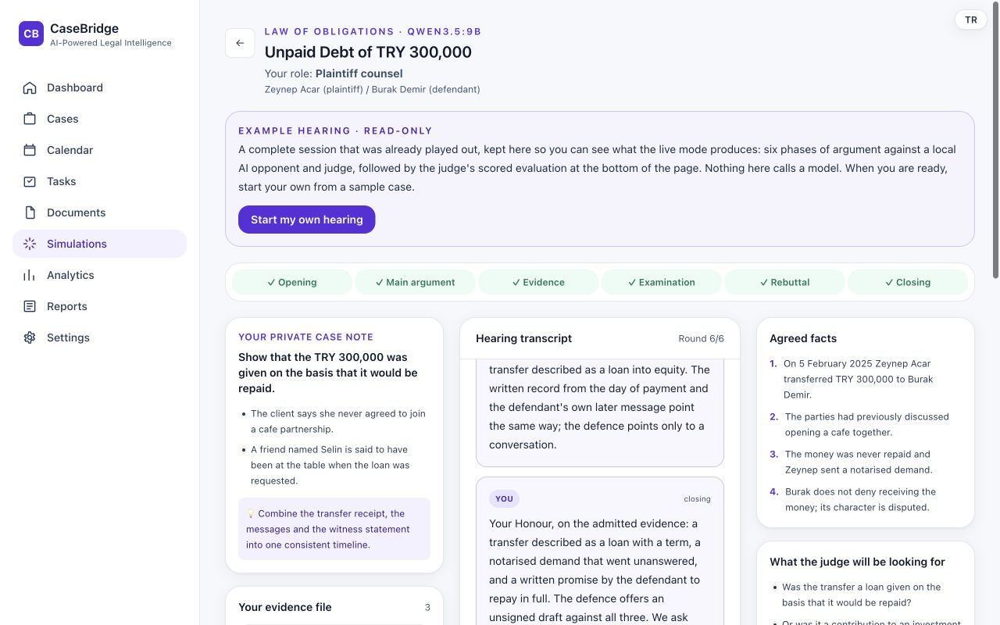
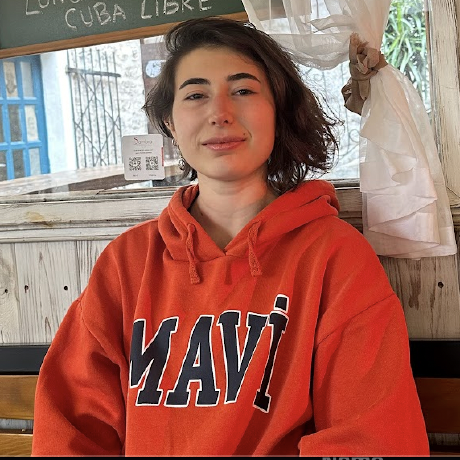
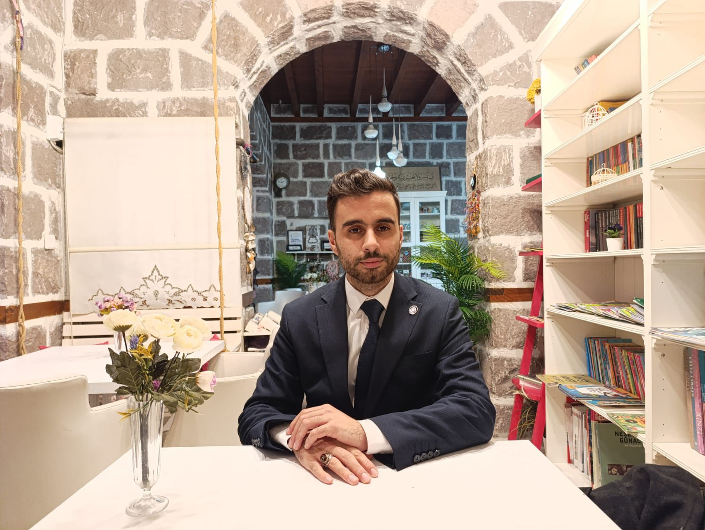

NOW · PROOF OF CONCEPT
3 firmsPROOF OF CONCEPT · 3 LAW FIRMS · TURKEY
End-to-end
case support.
CaseBridge helps lawyers understand their case, prepare for opposing arguments and decide what to do next. One workspace for client guidance, case analysis, document preparation and hearing practice.
Currently in proof of concept with three Turkish law firms. AI supports the lawyer’s judgment; it does not guarantee a case outcome.
CaseBridgeFrom the actual application

THE VALUE TO THE LAWYERSee the risks.
Know the next step.
Know the next step.
Where we are, and where we want to go
Three firms today.
A product built to grow.
We are at the proof-of-concept stage, working with three law firms in Turkey. Their feedback drives our priorities. The next step is to validate repeatable adoption before scaling; international operations are still planned.
YEAR 1 · 2027 TARGET
100+ firmsBuild repeatable adoption
Grow in Turkey and seek US-led seed investment.PLANNEDYEAR 2 · 2028 TARGET
10+ companiesEstablish a US presence
Enter cross-border company workflows and target a US office.PLANNEDYEAR 5 · 2031 TARGET
1,000+ companiesScale internationally
US and international-trade companies, plus a separate 1,000-firm target.PLANNEDCurrent three-firm POC is founder-reported. Future counts are targets, not current customers. Seed funding, US entry and commercial rollout remain conditional.
What the customer gets
A practical assistant.
Across the whole case.
Start the client conversation with the right questions. Keep facts, documents and open issues together. Review possible outcomes and prepare your next action with your case context in view.
Better first meetings.
Suggested questions and missing-fact prompts to help the lawyer structure the conversation.
Issues brought forward.
Review the process and flag possible gaps, inconsistencies and missed actions for a lawyer to check.
Conversations into actions.
Analyze authorized recordings, extract facts and prepare petition or document drafts for review.
Challenge your strategy.
Compare AI perspectives, inspect disagreements and practice a fictional hearing before the real one.
The POC product program is shaped by partner feedback. Feature availability varies by deployment; recordings need appropriate permissions and all legal outputs need professional review.
Explore the product: analysis, rehearsal and case management
Four perspectives on your case
Your argument matters.
So does the other side’s.
CaseBridge examines your case from the perspectives of a researcher, plaintiff counsel, defendant counsel, and a judge. See which claims are supported, what is missing, and where the opposing party might challenge your position in one report.
01
Researcher
Identify the facts and missing information.
02
Plaintiff counsel
Examine arguments supporting the claim.
03
Defendant counsel
Prepare for the other side’s objections.
04
Judge’s perspective
Consider both sides together.
Case analysis
Possible outcomes.
Reasoning.
Practical next steps.
Your analysis report presents possible scenarios and their reasoning. Alongside strengths and weaknesses, it lists questions to investigate and suggested actions to strengthen your case.
See the product in actionAssess possible case outcomes.
Review scenarios based on your case materials alongside an AI assessment score and confidence level.
Strengthen your case strategy.
Plan your next steps around missing documents, unanswered questions, and recommended actions.
Prepare for opposing arguments.
Examine the opposing party’s defense and the weaknesses in your case alongside your own arguments.
STRATEGY NOTES
Example case:
Debt recovery dispute
STEPS TO CONSIDER
1
Complete the evidence chain.
Connect the payment record and correspondence in a clear timeline.
2
Examine the opposing claim.
Question the agreement and terms supporting the claim that the payment was an investment.
3
Resolve unanswered questions.
Gather missing documents and reassess your case.
AI outputs support decision-making; they do not guarantee a legal outcome or success. The assessment score is not a statistically validated probability of winning. Results must be reviewed by a legal professional.
Platform
Before the hearing,
make time to practice.
Choose a side in a sample case, present evidence, and respond to opposing arguments. At the end of the session, review your strengths and areas to improve.

Rehearse before you enter the courtroom.
Act as plaintiff or defendant counsel. Present evidence, respond to an AI opponent, and practice your strategy in a six-stage fictional hearing.
Learn from every rehearsal.
Get feedback on evidence use, rebuttals, and courtroom strategy. The 74/100 shown is a training score, not a prediction of a real case outcome.
Screenshots are from a fictional sample hearing in the CaseBridge application.
Case management
Your firm’s
everyday workspace.
Cases and documents
Keep parties, documents, and case history in one place.
Calendar and tasks
Track hearing dates and tasks together.
Firm analytics
Review case distributions and recorded outcomes.
Case handover
Bring together the case history and next steps.
Team
The team behind
CaseBridge.
We bring AI, software engineering, and legal expertise together in one product.
Izzet Ahmet
AI Lead
AI & model development
- Multi-perspective case analysis
- Model integration and evaluation
- Hearing simulation
Izzet Ahmet
AI Lead
AI & model development
- Multi-perspective case analysis
- Model integration and evaluation
- Hearing simulation
Izzet Ahmet
AI Engineer | Project Manager
Perpetual Labs | AI Engineer
Silicon Valley-based AI training data company.
- Managing 6 AI projects
- AI development and team coordination
- Business development and dataset acquisition
ASELSAN | AI & Test Automation Engineer
Leading Turkish defense and technology company.
- 2 years of engineering experience
- AI-powered test automation
- Intelligent document analysis and software QA
Provenvest | Co-Founder
TÜBİTAK-supported AI-powered quantitative trading platform.
- AI product development
- Natural language to automated backtesting
- AI-driven performance analysis and strategy recommendations
Hatice Çam
Backend Lead
Technarts · Backend & visual designBackend & system architecture
- API and service development
- Databases and data flows
- Application infrastructure
Hatice Çam
Backend Lead
Technarts · Backend & visual designBackend & system architecture
- API and service development
- Databases and data flows
- Application infrastructure
Hatice Çam
Backend Developer | Technarts
Backend developer at Technarts, contributing to two product development projects.
- Backend development for an event management platform
- Development of an IP Address Management (IPAM) system for network management
- Experience with diverse technologies and different stages of product development
Artistic Background | Oil Painting
Hatice has enjoyed drawing and oil painting for a long time, developing an eye for color, light, composition and visual balance.
Her artistic perspective helps us build an application that is easy to use, visually consistent and thoughtfully designed.

Bengü Özbek
Network & Investment Lead
Lastfall · Autosense · TechnartsBusiness development & investment
- Strategic partnerships
- Investor relations
- Network development and growth
Bengü Özbek
Network & Investment Lead
Lastfall · Autosense · TechnartsBusiness development & investment
- Strategic partnerships
- Investor relations
- Network development and growth
Bengü Özbek
Network & Investment Lead
Working draft — role titles, dates and responsibilities below are provisional and will be confirmed.
Lastfall | Business Development
- Partnership discovery and relationship development
- Customer conversations and opportunity mapping
- Early-stage growth planning
Autosense | Partnerships & Growth
- Partner outreach and ecosystem development
- Commercial research and stakeholder coordination
- Turning customer needs into growth opportunities
Technarts | Network & Investment
- Technology ecosystem and strategic partnerships
- Investor communications and pitch coordination
- Business development for emerging products

Ahmet Büyükdağ
Legal Lead
Legal content & product advisory
- Legal scenarios and workflows
- Review of the analysis framework
- Legal professionals’ needs
Ahmet Büyükdağ
Legal Lead
Legal content & product advisory
- Legal scenarios and workflows
- Review of the analysis framework
- Legal professionals’ needs
Ahmet Büyükdağ
Legal Professional | NGO Management | Project Coordinator
İHH Humanitarian Relief Foundation | Volunteer Management
International humanitarian aid organization.
- Volunteer management and coordination
- Donation operations and reporting
- Educational programs and organizational activities
Young İHH | Board Member
Youth-focused humanitarian and social development organization.
- University and high school coordination
- Educational programs and youth leadership
- Organizational management and team development
Hacettepe Ombudsman & Human Rights Society | Founding President
University-based society focused on human rights and legal awareness.
- Founding leadership and organizational development
- Human rights advocacy and awareness
- Academic events and student engagement
The opportunity
A Turkish starting point.
A global ambition.
Expansion schematic · future markets are planned
LOCAL VALIDATION → INTERNATIONAL SCALE
Prove it here.
Build for beyond.
01
Turkey today3 law firms · proof of concept
02
United States nextPlanned office · local validation
03
Cross-border scale1,000+ companies · Year-5 target
The market, in context
Turkey
206,678 lawyersThe TBB’s year-end 2025 count shows a substantial local professional base. Local research and drafting tools already compete here; our entry point is direct workflow collaboration with small firms. TBB source ↗
United States
1.37 million lawyersThe ABA’s 2025 profile describes a much larger legal market. GVR estimates US legal AI revenue at $561.9m in 2024 and forecasts $1.40bn in 2030. Entry requires local legal, security and procurement readiness. ABA ↗ · GVR ↗
Global
$2.1bn in 2026GVR’s legal AI market estimate reaches $3.9bn by 2030. The opportunity spans research, documents, compliance and disputes, but jurisdiction-specific content and incumbent distribution make expansion demanding. GVR source ↗
TAM / INDUSTRY ENVELOPE
$2.1bn
Global legal AI · 2026 estimate
Published category estimate · GVRSAM / SELECTED SEGMENTS
$109.4m
Modeled annual subscription opportunity
SOM / YEAR-FIVE SOFTWARE TARGET
$7.2m
Exit annualized subscription run rate
1,000law firms+1,000companies
Software only · licensing and commissions excludedThe SAM donut shows mutually exclusive subscription segments. TAM is a published industry estimate; SAM and SOM are planning scenarios. The $40m Year-5 total revenue target also includes data licensing and commissions and is separate from the $7.2m software exit run rate.
How TAM, SAM and SOM are calculated Sources & assumptions
Published 2026 legal AI category
$16.53m TR + $32.88m US + $60m companies
1,000 × $1,200 + 1,000 × $6,000
TAM: the published $2.1bn global legal AI category estimate for 2026 is an industry envelope, not a forecast of CaseBridge sales. It includes products beyond our initial scope.
SAM: Turkey: 206,678 lawyers ÷ 3 lawyers per firm × 20% target fit × $1,200/year = $16.53m. United States: 1.37m lawyers ÷ 5 per firm × 10% target fit × $1,200/year = $32.88m. Add 10,000 non-law-firm companies with international-trade workflows × $6,000/year = $60m. Total: $109.41m/year.
Lawyer counts are sourced; average firm sizes, target-fit percentages, the 10,000-company pool and prices are planning assumptions, not measured firm counts or a verified prospect list. Lawyer counts include professionals outside law firms, making these approximations especially uncertain. The company pool excludes law firms to avoid double counting.
SOM: 1,000 law firms × $1,200 + 1,000 companies × $6,000 = $7.2m at the end of Year 5. The 2,000-account target is an execution objective, not a market-share prediction. Subscription revenue recognized during Year 5 is $5.01m because customers join throughout the year. This software SOM is separate from the $40m total annual revenue target.
Data licensing and commissions are excluded from software TAM/SAM/SOM. There is no verified addressable-data-market estimate or contracted licensing pipeline in this plan. Licensing and commission projections are shown separately rather than added to software market size.
Research checked 25 October 2026. Market estimates are third-party estimates; modeled SAM/SOM are management planning scenarios. US 2024 and global 2026 statistics have different base years and should not be compared as same-year market shares.
Compare 15 competitors and our intended advantages
A competitive market. A specific entry point.
Fifteen examples across three market groups. Grouping reflects the market being compared, not necessarily company headquarters. Capabilities below follow vendor descriptions, not independent product testing.
Turkey 5 market examples
| Product | Established strength | CaseBridge’s focus |
|---|---|---|
| LEXPERA / LEXI ↗ | Legal research across legislation, case law and literature, with the LEXI AI assistant. | Connect research to interview preparation, case monitoring and hearing practice. |
| Kazancı AI ↗ | Source-based legal answers, petition preparation and document analysis. | Track the client-to-case workflow and return reviewable next actions. |
| Lexapel ↗ | Case-file copilot, page citations, chronology and UDF drafting. | Differentiate through guided intake, voice analysis and rehearsal; case context alone is not unique. |
| Lexara ↗ | Turkish legal research, case briefings, drafting and contract tools. | Compete on the combined workflow and measured usefulness, rather than claiming exclusive drafting capabilities. |
| Themis.ai ↗ | Turkish-law research, official-source references and document drafting. | Add ongoing case review and practical hearing feedback alongside legal research. |
United States 5 market examples
| Product | Established strength | CaseBridge’s focus |
|---|---|---|
| Harvey ↗ | Enterprise legal agents, document analysis, knowledge and workflow orchestration. | Start with Turkish firms and a focused interview-to-hearing workflow; broader scale is an incumbent advantage. |
| Thomson Reuters / CoCounsel ↗ | Legal AI connected to Westlaw, Practical Law and professional workflows. | Develop a complementary workflow layer; do not claim an equivalent licensed research corpus. |
| LexisNexis / Protégé ↗ | Research, analysis and drafting grounded in LexisNexis content. | Focus on case preparation and small-firm deployment; source coverage needs independent validation. |
| Filevine / LOIS ↗ | Matter management, documents, intake, legal research and AI drafting. | Demonstrate a tighter intake-to-monitoring feedback loop in our initial Turkish segment. |
| Everlaw ↗ | Evidence review, litigation and investigation workflows with legal AI integrations. | Concentrate on attorney preparation and rehearsal; do not position as enterprise eDiscovery replacement. |
International 5 market examples
| Product | Established strength | CaseBridge’s focus |
|---|---|---|
| Legora ↗ | Collaborative legal AI, research and agentic workflow execution. | Win a focused local segment through direct iteration with working firms, before expanding jurisdiction coverage. |
| Luminance ↗ | Contract intelligence, review, negotiation and connected workflows. | Focus first on disputes and preparation, then validate cross-border company workflows. |
| Spellbook ↗ | AI contract review, drafting and consistency across agreements. | Support disputes and hearings in addition to document preparation; drafting alone is not a moat. |
| Jus Mundi / Jus AI ↗ | Arbitration research, verified sources, analysis and drafting support. | Build a Turkey-to-international-trade workflow; specialized arbitration coverage remains an incumbent strength. |
| Clio ↗ | Practice management, intake, documents and AI-assisted analysis and strategy. | Prove a combined, locally adapted preparation experience instead of claiming case management is unique. |
What we aim to do better — and how we will prove it
| Our intended advantage | Concrete product choice | Evidence we need |
|---|---|---|
| Continuity across the case | Carry interview facts into evidence review, monitoring, drafts and rehearsal. | Measure handoff time, repeated data entry and missed-action rates with partner firms. |
| Visible disagreement | Compare independent model responses, preserve disagreements and route uncertainty to a lawyer. | Run blinded legal reviews against a single-model baseline. Multiple models can share the same error. |
| Fast local iteration | Use feedback from the three Turkish firms to prioritize specific workflow problems. | Document adoption, retention and time saved. Three firms do not establish broad product-market fit. |
| Lower subscription burden | Price around bounded delivery costs, with separate, optional rights-cleared data partnerships. | Validate willingness to pay and direct cost recovery. No “cheapest in Turkey” claim is made. |
| A reusable data-quality process | Create reviewed, permissioned evaluation and training assets through a lab program. | Prove ownership, quality, demand and legal transfer rights. The licensing model is a commercial thesis, not an established moat. |
Competitors already offer drafting, case context, multi-agent workflows and practitioner feedback. We do not claim these features are unique, or that CaseBridge has demonstrated superior accuracy, security or scale.
Three revenue streams. One connected platform.
Subscription layer
Cover delivery costs.
Proposed entry pricing is $100/month per law firm and $500/month per company, billed annually. The firm tier assumes up to three users; the company tier assumes up to ten. Audio, model calls, storage and support are capped, with heavy usage metered separately.
The model budgets direct service delivery at 90% of subscription revenue. This leaves a 10% contribution before product development, security, sales and administration. Subscriptions are intended to cover service costs, not to fund the entire company alone.
These are proposed CaseBridge prices, not competitor quotes or validated willingness to pay. Lexara’s local, per-user plans and Harvey’s custom enterprise pricing show very different scopes. We avoid unsupported seat-price comparisons and FX conversions.
Lab & licensing layer
Make quality data the growth engine.
Our intended principal revenue source is licensing the commercially eligible portion of lab-produced legal datasets: reviewed synthetic scenarios, owned annotations, evaluation sets and genuinely anonymized aggregates where lawful.
Only eligible assets would be shared with partner laboratories and licensed to approved buyers. We propose a 40% lab-partner share of gross licensing receipts; 15% is budgeted for data operations and review. Neither a lab agreement nor buyer contracts are assumed to be signed.
Subscription access must not depend on joining the data program. A separate agreement must establish ownership, permissions, confidentiality, permitted use, deletion and any transfer mechanism. Removing names does not by itself clear data for sale.
Marketplace commissions. A planned third revenue stream from optional software and workflow-service orders. The model assumes a 10% platform fee on completed orders; supplier order value is excluded from CaseBridge revenue. No legal referrals or outcome fees are included.
Owned or authorized inputsLegal & privilege reviewQuality & anonymization checksApproved lab / buyer license
Client files, recordings and privileged material are not automatically eligible for sharing. Pseudonymization is not anonymization; confidential business information and copyright can still restrict reuse. Controls described here are requirements for the proposed model, not a claim of completed compliance certification. See KVKK anonymization guidance, cross-border transfer guidance and ABA Formal Opinion 512.
Annual revenue and cost targets
Illustrative USD planning model, before tax, financing, depreciation and working-capital timing. No historical revenue is supplied. These figures are targets, not booked revenue, signed contracts or a valuation.
Aggressive annual revenue target: $40m in Year 5 across three uncontracted revenue streams.
FIVE-YEAR PLAN · USD
Revenue
Data licensing, subscriptions and marketplace commissions.
FIVE-YEAR PLAN · USD
Operating costs
Delivery, lab share, data review, marketplace operations and fixed spend.
THE FIVE-YEAR FINANCIAL PLAN
Annual revenue, operating costs
and indicative result
USD · planning targets| Year | Exit firms / companies | Subscriptions | Data licensing | Commissions | Total revenue | Operating costs | Indicative result |
|---|---|---|---|---|---|---|---|
| Y1 / 2027 | 100 / 0 | $60,000 | $25,000 | $15,000 | $100,000 | $470,750 | $-370,750 |
| Y2 / 2028 | 200 / 10 | $210,000 | $300,000 | $90,000 | $600,000 | $1,172,000 | $-572,000 |
| Y3 / 2029 | 350 / 100 | $660,000 | $3,000,000 | $340,000 | $4,000,000 | $3,812,000 | $188,000 |
| Y4 / 2030 | 600 / 350 | $1,920,000 | $11,000,000 | $2,080,000 | $15,000,000 | $10,894,000 | $4,106,000 |
| Y5 / 2031 | 1,000 / 1,000 | $5,010,000 | $30,000,000 | $4,990,000 | $40,000,000 | $26,807,000 | $13,193,000 |
Revenue, cost and customer assumptions Show the calculations
The $40m Year-5 annual revenue target is an aggressive planning scenario: $30m data licensing + $5.01m subscriptions + $4.99m marketplace commissions. It is not five-year cumulative revenue, software ARR or a valuation. Customer names are outreach examples, not existing customers, qualified leads or buyers with confirmed budgets.
Subscriptions = average opening/closing firms × $1,200/year + average companies × $6,000/year. Linear net growth, flat prices and no separate churn factor are assumed. Year-5 exit subscription run rate remains $7.2m; earned subscription revenue is $5.01m.
Annual data licensing assumes 1 / 3 / 10 / 22 / 40 buyers at $25k / $100k / $300k / $500k / $750k each. Eligible data accumulated during the program may support repeat, non-exclusive licenses; annual receipts are counted once per modeled contract-year. Catalog scale, refresh capacity, data volumes and buyer willingness to pay remain unvalidated. No client material is automatically eligible for sale.
Commissions = 30 / 180 / 680 / 4,160 / 9,980 annual software and workflow-service orders × $5,000 order value × an assumed 10% fee. Year-5 gross marketplace volume is $49.9m; only the $4.99m fee is counted as CaseBridge revenue. No legal referrals, lawyer fee sharing or case-success fees are modeled. The marketplace and its agreements are future capabilities.
Variable costs = 90% of subscriptions for delivery + 40% of data licensing for lab royalties + 15% for data review/production + 20% of commissions for marketplace operations. Fixed costs are engineering/product, sales/US expansion and legal/security/administration, shown per year in the cost explorer. Variable delivery does not include salaries already budgeted as fixed costs.
Data licensing is shown gross of the lab share under a principal assumption; net recognition could be required by eventual contracts. Commissions are already net of supplier order value. This is an operating model before tax, financing, depreciation and working-capital timing, not a cash-flow forecast.
Prospect context: OpenAI’s public data partnerships program illustrates potential demand for suitable proprietary datasets; it does not validate CaseBridge demand, contract values or a relationship.
Download annual model (CSV) ↓ · Assumptions and sources (JSON) ↓
Where the proposed $1.5m seed goes
A 24-month capital-allocation envelope, not a quote or completed fundraising. Planned spending is staged against product, retention and legal-readiness milestones.
What we need from investors
Capital, US market access
and the right introductions.
We are seeking a proposed $1.5m seed round to turn the three-firm proof of concept into a repeatable product, prepare US entry and validate a rights-cleared lab-data business.
Beyond capital: introductions to US legal teams, cross-border companies, specialist counsel and potential research-data buyers. Target funding envelope: 24 months; further capital may be needed.
Engineering & product40% · $600,000
AI orchestration, backend, UX, integrations and deployment reliability.
Data, security & legal readiness20% · $300,000
Rights review, annotation quality, privacy engineering, counsel and security assessment.
Infrastructure & delivery15% · $225,000
Model inference, audio processing, storage, monitoring and customer support.
Market entry & US preparation15% · $225,000
Customer acquisition, local validation, incorporation advice and initial office setup.
Liquidity reserve10% · $150,000
Collection delays, currency changes and unexpected delivery costs.
This allocation describes intended use of capital; the annual model describes operating expense funded by revenue and capital. Do not add seed allocation to annual costs. Funding requirements depend on the selected scenario.
The one-, two- and five-year plan
Year 1 starts in 2027. All customer counts below are targets, not current deployments. International expansion is conditional on funding, local validation and legal readiness.
YEAR 1 · 2027
100+ Turkish law firms
- Grow from three firms to a repeatable onboarding process.
- Validate retention, usage costs and workflow quality.
- Seek a $1.5m seed round, with US investors, to prepare global expansion.
YEAR 2 · 2028
10+ cross-border companies
- Enter international-trade workflows with at least ten companies.
- Target a US office and a US-led expansion team.
- Validate a bounded jurisdiction and practice area before broad US distribution.
YEAR 5 · 2031
1,000+ companies
- Serve at least 1,000 companies in the US and international-trade segment.
- Target a separate base of 1,000 law-firm accounts.
- Build a repeatable, rights-cleared licensing program with multiple buyers.
The US office, seed investment and global operations are future objectives. Today’s operating footprint remains Turkey only.
Risks, safeguards and decision gates
Risks and the measures we plan to take
| Risk | Planned response | Decision gate |
|---|---|---|
| Confidentiality, privilege & data rights | Separate service and data agreements; document provenance and ownership; exclude restricted material; test anonymization and re-identification risks. | No dataset leaves the controlled environment without asset-level legal clearance. If clearance fails, licensing revenue is zero. |
| Incorrect legal outputs | Lawyer approval, source checks, explicit uncertainty, logged disagreement and practice-specific evaluation sets. | No automatic filing, legal conclusion or guaranteed outcome. Model agreement alone is insufficient. |
| Audio consent & sensitive information | Recording controls, purpose limits, jurisdiction-specific consent checks, restricted access and deletion schedules. | Disable capture where permissions or the legal basis are unresolved. |
| Cross-border expansion | US counsel and professional partners; review applicable state rules, transfers, contracts and data processing before entry. | Limit initial US scope; do not market unvalidated jurisdiction coverage. |
| Data buyers do not materialize | Test paid evaluation projects early, diversify buyers and cap data production without demand. | Use the no-licensing scenario to decide staffing and fundraising; do not spend against unsigned contracts. |
| Low-price subscriptions become loss-making | Meter heavy inference and audio use; monitor cost per active account; adjust package limits. | Target delivery costs at or below 90% of subscription revenue; reprice or pause unprofitable workloads. |
| Security or vendor failure | Access isolation, encryption, backups, incident response, supplier review and bounded multi-provider fallback. | Security testing and recovery exercises before broader deployment. No certification is claimed. |
| Incumbent competition & adoption | Measure onboarding, retention and reviewed time savings; focus on a narrow workflow before feature expansion. | Validate repeat use beyond the initial three firms before accelerating acquisition. |
These are proposed operating safeguards. Legal and security review must confirm their implementation and suitability; they are not a blanket statement that client data can legally be sold.
Frequently asked questions
Frequently asked questions
What you may
want to know.
Does CaseBridge predict case outcomes with certainty?
No. CaseBridge offers possible scenarios and an AI assessment based on the information in your file. The score is not a statistically validated winning percentage. Missing information and model errors can affect the assessment; final judgment remains with a legal professional.
How can it help strengthen a case?
It highlights strong and weak arguments, potential objections, and missing information. Questions to investigate and recommended actions help turn preparation into practical work.
How does case analysis differ from hearing simulation?
Case analysis is a multi-perspective assessment report based on your case. Hearing simulation is a fictional training exercise where you act as counsel and interact with an AI opponent and judge.
Who is CaseBridge designed for?
It is designed for lawyers and law firms that want to manage case files, assess different arguments, and improve hearing preparation.